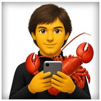

A 2-day course I teach as part of a CAS: how to plan and build agentic AI systems, with hands-on practice on real service cases. Next run: 10–17 Dec 2026.
For many years I've been fascinated by one idea: AI that helps people grow. These are the projects where I put it to work. I could not have achieved so much without my AI agents.

working every daypersonal AI agent · OpenClaw
JAI, my personal AI agent
Built on OpenClaw, then transformed and tailored to the way I work. JAI supports me in idea generation, preparation, marketing, coding, testing, communication, family arrangements and much more. It also built and maintains this website.
A small circle of people who run AI inside their companies. Different industries, same real questions: what worked, what broke, what saved it. No slides, no hype, no pitching. Five rounds since June 2025; next in early 2027.
From 18 years of banking to leading AI transformation: where I worked, where I learned, and what I built along the way.
2026 – 2027
ETH Zurich
CAS in AI, Data and Machine Learning · Department of Computer Science
Mar 2026 –
Mentor, Young AI Leaders Zurich Hub
Part of the UN ITU "AI for Good" initiative. Helping early-stage AI talent turn ideas into something real.
Dec 2025 –
AI Transformation Manager, SFS Group
Taking AI from pilots to production in a Swiss industrial group.
Nov 2025 –
Applied AI Lecturer and Trainer, Digicomp Academy
Hands-on programmes on building agentic AI systems, starting with ITSM AI agents.
Aug 2024 –
Chief AI Advisor, CloEE (part-time)
Generative AI for discrete manufacturing: real-time machine data, efficiency and lower emissions.
Jul 2024 – Aug 2026
Co-founder, Swiss AI Chatbot Factory
An autonomous platform that builds a website chatbot from a URL in three minutes.
Jun 2024 –
Curator, Head of AI Club Zurich
Private roundtable for the people who run AI inside their companies.
2024
GenAI Manager, Capco (contract)
AI strategy and governance for banks in Switzerland and Germany.
Aug 2023 – Dec 2025
Founder, AI Dev Center
15 GenAI tools and agents, including a Telegram GPT chatbot with 100K users.
2022 – 2023
Self-learning
Full-stack development and Python coding
2022 – 2023
Advisor to the Board, MD for Tech and Business Efficiency, Eurasian Development Bank
Banking technology and efficiency projects.
2017 – 2018
London Business School
Executive MBA · Banking, Finance and Technology, with distinction
2011
Chicago Booth School of Business
Psychology of Effective Management
2006 – 2022
International Corporate Business, a large technology bank
16 years in international corporate banking and trade finance.
2001 – 2006
IBI
Banking · Management and Anti-crisis Management
Certificates
ITIL · management, finance, risk and financial modelling
JAI twin brother
Ask about my trainings, AI projects, talks and writing. JAI, my real agent, stays private; his twin brother answers here.
It uses free AI models and runs on a free service with limited access. It knows only what's on this site and is not connected to Nick's real assistant.
JAI twin brother
twin@inofc: ~ (free public demo)
twin$ pick a topic below, or type a question
Contact
18 years in banking, then I started over. Now I build with AI, teach it, and bring it into companies. The fastest way to reach me is LinkedIn.
Speaking
Talks, lectures and the community I host.
Head of AI Club Zurich
A small circle of people who run AI inside their companies. Different industries, same real questions: what worked, what broke, what saved it. No slides, no hype, no pitching. Five rounds since June 2025; next in early 2027.
Follow on LinkedInTalks & lectures
Invite me to speak